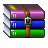

|
Winamp |
2.95 |
Легендарнейший аудиоплеер эпохи 90-начала00х |
|

|
IrfanView |
4.60 |
Программа для просмотра изображений разных форматов |
|
Total Commander |
10.51 |
Файл менеджер для множества версий Windows. Работает даже на 95 |
||

|
WinRAR |
3.40 beta 5 |
Архиватор ZIP, RAR, CAB, TAR, 7z, ISO и многих других форматов |
|
FL Studio |
5.0.2 |
Цифровая звуковая рабочая станция (DAW) и секвенсор для написания музыки. |
||

|
UTorrent |
1.1.3 |
Старая версия популярного до сих пор и не очень безопасного в наше время ТОРРЕНТ-клиента |
|
.png)
|
Opera |
12.18 |
Последняя версия Opera на собственном движке Presto. До сих пор умудряется открывать некоторые сайты |
|

|
QIP |
2005 b8096 |
Должна работать с серверами KICQ |
|
Sony Vegas |
4.0 |
Известная программа для редактирования видео. 4.0 Версия работает на WIN9X но не поддерживает MP4 файлы |
||

|
Internet Explorer |
5.5 |
Полностью на русском языке |
|
ImgBurn |
2.5.8.0 |
Для записи CD дисков на старых OS |
||

|
Java SE |
1.5.0.18 |
Версия для старых Windows |
|
Windows Media Encoder |
7.1 |
Запись и конвертация аудио и видео в форматы .wmv, .asf, .wma |
||
|
TrueSync for Franklin Rex-3 |
|
ISO файл c программой для синхронизации органайзера Franklin Rex-3 и последующей линейки. |
Также используйте его при проблемах с закачкой

Поскольку Adobe убила Flash 31.12.2020 и 12.01.2021, для запуска swf файлов вы можете использовать Flash Player 29 от команды Flashpoint. Однако никто не запрещает зас использовать другие Flash Player)
Очень классная программа для любителей создавать анимации и кастомных персонажей из MLP. Можно создавать позы, выбирать прически, крылья, аксессуары и многое другое
источник: generalzoi.deviantart.com
Последняя версия креатора. Огромное количество новых причесок, хвостов, одежды, аксессуаров. Интерфейс стал гораздо удобнее: Можно экспортировать персонажей в специальный код и делиться им с друзьями. Можно отменять действия или создавать случайных персонажей...
источник: generalzoi.deviantart.com
Пожалуй самый лучший симулятор Windows основанный на Flash. Имитирует дизайн Windows Vista
источник: newgrounds.com
Одна из последних версий Создателя сцен по вселенной Sonic.
источник: newgrounds.com

Вытащена из Шарарама при помощи программы "Шарафайлы"
источник: sharaball.ru